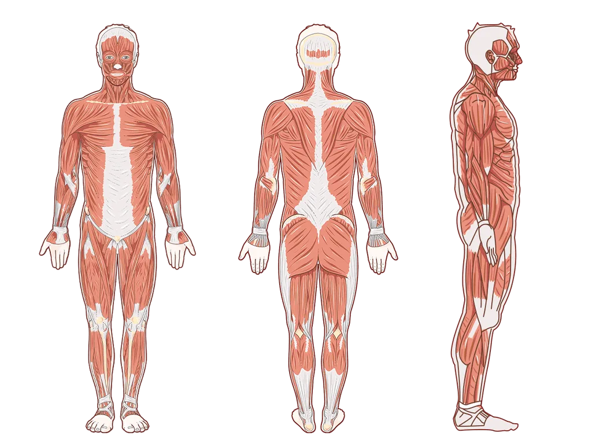
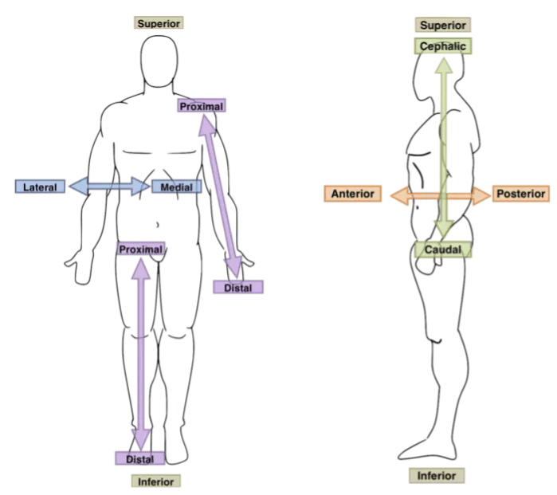
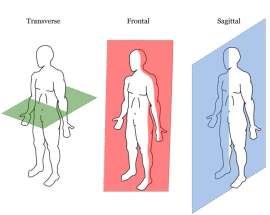
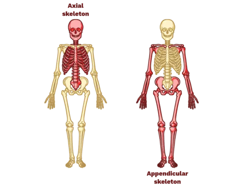
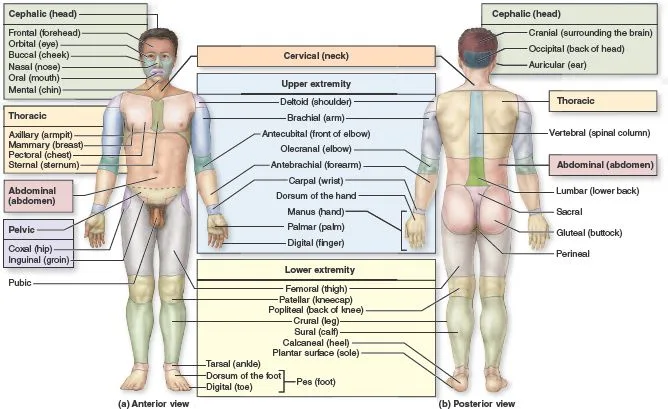
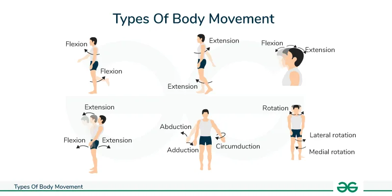
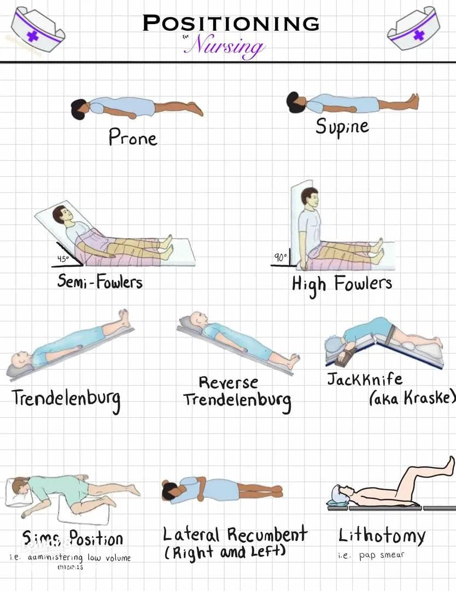

Expanded Nursing Uganda Explanation
Anatomical Positions, Terms & Body planes should be understood beyond a short definition. Link the concept to patient history, focused assessment, common risks, nursing priorities, documentation and evaluation of outcomes.
Contents, 26 sections (tap to expand)
01 Anatomical Position, Directional Terms & Planes
- What is the anatomical position, and why is it the universal standard?
- What are the specific directional terms used to navigate the human body?
- What are the anatomical planes and sections used in medical imaging?
- How do we correctly describe specific body movements and clinical patient positions?
02 The Problem: Why Do We Need a Standard?
When we describe where something is on the human body, it can quickly become confusing because the body is incredibly mobile. For example, if a person is holding their hand with the palm facing up, a mole on it is on the "front." But if they turn their hand so the palm faces down, is that mole now on the "inside," the "back," or still the "front"?
This ambiguity is highly dangerous in medicine (e.g., a surgeon operating on the wrong side of a limb). This confusion is exactly why anatomists and medical professionals created a single, rigid standard position to use as an absolute reference point, no matter how the body is actually positioned in real life.
03 The Golden Rule of Anatomy
No matter how a patient or a body in an image is actually positioned (sitting, lying down, upside down, or curled up), you always describe their anatomy as if they were standing in the Anatomical Position .
Most Important Rule: All descriptions are from the patient's point of view , not yours. The patient's left is always their left, even if it is on your right side when you look at them.
04 The Solution: The Anatomical Position
The Anatomical Position is the universal starting point for describing any part of the body. It acts as the "Zero Coordinate" for the human map.
05 The Strict Rules of Anatomical Position:
- Body Posture: The person is standing up straight (erect).
- Head and Eyes: They are facing directly forward, with eyes looking straight ahead.
- Lower Limbs: The legs are together or slightly apart (shoulder-width), with the feet flat on the floor and toes pointing directly forward.
- Upper Limbs: Their arms are hanging down at their sides.
- Hands (Crucial Detail): Their palms are facing forward (supinated). Because the palms face forward, their thumbs are pointing away from the body (laterally). This ensures the two bones of the forearm (radius and ulna) are parallel and not crossed over each other.
06 Anatomical Terms of Position (Directional Terms)
These terms are like a GPS for the body. They are used in pairs of opposites and help describe where one body part is strictly in relation to another. To accurately describe body parts and their positions, we use this specific set of directional terms.
- Anterior (Ventral): Towards the front of the body. Example: "The sternum (breastbone) is anterior to the vertebral column (spine)." Example: "The kneecap is located on the anterior side of the leg."
- Posterior (Dorsal): Towards the back of the body. Example: "The vertebral column (spine) is posterior to the sternum." Example: "The shoulder blades are located on the posterior chest wall."
- Superior (Cranial/Cephalic): Towards the top or head. Used only for the head, neck, and trunk. Example: "The nose is superior to the mouth." Example: "The skull is cranial to the neck."
- Inferior (Caudal): Towards the bottom, feet, or tail. Used only for the head, neck, and trunk. Example: "The mouth is inferior to the nose." Example: "The neck is caudal to the skull."
- Medial: Towards the imaginary midline of the body. Example: "The nose is medial to the ears." Example: "The heart is medial to the lungs."
- Lateral: Away from the midline of the body; towards the sides. Example: "The ears are lateral to the nose." Example: "The arms are lateral to the chest."
- Superficial (External): Situated closer to the surface of the body. Example: "The skin is superficial to the skeletal muscles."
- Deep (Internal): Situated further inward, away from the surface of the body. Example: "The bones are deep to the skin and muscles."
- Proximal: Closer to the origin or attachment point of a limb to the main trunk of the body. Example: "The elbow is proximal to the wrist." Example: "The femur (thigh) is proximal to the knee."
- Distal: Farther away from the origin or attachment point of a limb. Example: "The wrist is distal to the elbow." Example: "The toes are distal to the ankle."
- Ipsilateral: On the same side of the body. Example: "The right hand and right foot are ipsilateral."
- Contralateral: On the opposite side of the body. Example: "A stroke on the right side of the brain causes contralateral paralysis on the left side of the body."
- Rostral: Towards the nose (specifically used in neuroanatomy to describe the brain).
07 Student Pitfall: Proximal/Distal vs. Superior/Inferior
Students often make the mistake of saying "The wrist is inferior to the elbow." While technically lower to the ground, anatomists strictly reserve Superior/Inferior for the Head and Trunk (Axial skeleton) . For the arms and legs (Appendicular skeleton), you must use Proximal and Distal. Why? Because if you raise your hand above your head, your wrist is suddenly physically higher than your elbow. But anatomically, the wrist is always Distal to the elbow, no matter where your arm is reaching!
08 Anatomical Planes and Sections
To study internal anatomy, or to view the body using medical imaging (like CT scans or MRIs), the body is often sectioned (cut) along an imaginary flat 2D surface called a plane . The cut itself is called a section .
- 1. Sagittal Plane: A vertical line dividing the body into left and right parts. Midsagittal (Median) Plane: Cuts exactly down the absolute midline, creating equal left and right halves.
- Parasagittal Plane: An off-center cut, creating unequal left and right portions.
- 2. Coronal (Frontal) Plane: A vertical line dividing the body into anterior (front) and posterior (back) parts. Memory Aid: Think of a crown (corona) sitting across the top of your head from ear to ear.
- 3. Axial (Transverse / Horizontal) Plane: A horizontal line dividing the body into superior (top) and inferior (bottom) parts. It acts like a cross-section.
- 4. Oblique Plane: Any plane that cuts through the body at an angle other than a perfect 90-degree vertical or horizontal angle.
When you look at a Transverse/Axial CT or MRI scan, the standard convention in medicine is that you are looking up from the patient's feet toward their head , while they are lying on their back. This is why the Right and Left markers on a scan seem reversed to you (the patient's right side appears on the left side of your computer screen).
09 Regional Terminology
This is like learning the names of countries on a map, but for the human body. We divide the body into two main areas: Axial (head, neck, trunk) and Appendicular (limbs).
10 A) Axial Skeleton Regions (Head, Neck, and Trunk)
- Region Common Name / Area Region Common Name / Area
- Frontal Forehead Mammary Breast area
- Orbital Eye area Scapular Shoulder blade (posterior)
- Nasal Nose area Vertebral Spine area
- Oral Mouth area Abdominal Belly
- Mental Chin Umbilical Belly button (Navel)
- Occipital Back of head Inguinal Groin (crease between trunk and thigh)
- Otic Ear area Pubic Genital region
- Cervical Neck (e.g., Cervical spine/collar) Lumbar Lower back (Loin)
- Sternal Breastbone area (center of chest) Sacral Near tailbone (base of spine)
- Axillary Armpit (e.g., Axillary lymph nodes) Buccal Cheek area
11 1. Upper Limb (The Arm)
- Acromial: Tip of shoulder.
- Brachial: Upper arm (shoulder to elbow).
- Antecubital: Front of elbow (where blood is typically drawn).
- Olecranal: Back of elbow.
- Antebrachial: Forearm (elbow to wrist).
- Carpal: Wrist (e.g., Carpal Tunnel Syndrome).
- Palmar (Volar): Palm of the hand (anterior surface).
- Dorsum of hand: Back of the hand.
- Pollex: Thumb.
- Digital (Phalangeal): Fingers.
12 2. Lower Limb (The Leg)
- Coxal: Hip area.
- Femoral: Thigh (hip to knee).
- Patellar: Anterior Kneecap.
- Popliteal: Back of the knee (where the popliteal artery runs).
- Crural: Anterior lower leg (Shin area).
- Sural: Posterior lower leg (Calf area).
- Fibular (Peroneal): Side (lateral aspect) of the lower leg.
- Tarsal: Ankle.
- Calcaneal: Heel of the foot.
- Plantar: Sole (bottom) of the foot.
- Dorsum of foot: Top surface of the foot.
- Hallux: Big toe.
- Digital (Phalangeal): Toes.
13 Body Movements
Describing how our bodies move seems simple, but terms like "up," "down," or "sideways" can be confusing because their meaning changes depending on our position. To create a clear and universal language for healthcare professionals, trainers, and scientists, anatomy uses a specific set of terms for every possible motion.
All of these movements are described from a single, consistent starting point: the Anatomical Position . These notes break down the essential anatomical movement terms, providing simple definitions and memory aids.
14 Flexion & Extension
- Flexion: Bending a joint or decreasing the angle between two body parts. Example: Bending your elbow; bringing your chin to your chest. Memory Aid: Think of curling into the "Fetal" position, everything is in Flexion.
- Extension: Straightening a joint or increasing the angle between two body parts back to anatomical position. Example: Straightening your knee; looking straight ahead.
- Hyperextension: Extending a joint beyond the normal anatomical position (e.g., looking up at the ceiling).
15 Abduction & Adduction
- Abduction: Moving a limb away from the body's midline. Example: Lifting your arm out to the side; spreading your fingers apart. Memory Aid: An alien abduction takes you away .
- Adduction: Moving a limb toward the body's midline. Example: Bringing your arm back down to your side; squeezing your fingers together. Memory Aid: You are "adding" the limb back to your body.
16 Rotational Movements
- Medial (Internal) Rotation: Rotating a limb inward, toward the body's anterior midline. Example: Turning your foot inward to be "pigeon-toed"; folding your arm across your stomach.
- Lateral (External) Rotation: Rotating a limb outward, away from the body's midline. Example: Turning your foot outward like a ballerina; opening your arm up to point to the side.
17 Circumduction
A circular, cone-like movement of a limb that combines flexion, extension, abduction, and adduction in a continuous sequence.
Example: Making large circles with your arm (like a windmill) or leg. The proximal end stays relatively stable while the distal end traces a circle.
18 1. Forearm: Supination & Pronation
- Supination: Rotating the forearm so the palm faces up (anteriorly in anatomical position). The radius and ulna are parallel. Memory Aid: You can hold a bowl of " soup " in your palm.
- Pronation: Rotating the forearm so the palm faces down (posteriorly). The radius crosses over the ulna to form an 'X'. Memory Aid: You are " prone " to dropping things if your palm is down.
19 2. Ankle & Foot: Dorsiflexion, Plantarflexion, Inversion & Eversion
- Dorsiflexion: Pointing your toes up toward your shin (lifting the foot off the gas pedal).
- Plantarflexion: Pointing your toes down, away from the shin (pressing the gas pedal, or standing on tiptoes).
- Inversion: Turning the sole of the foot inward (medially) to face the other foot. This is the most common way to sprain an ankle.
- Eversion: Turning the sole of the foot outward (laterally).
20 3. Scapula (Shoulder Blade) & Mandible (Jaw)
- Elevation: Moving a body part upward superiorly (e.g., shrugging your shoulders up, or closing your jaw).
- Depression: Moving a body part downward inferiorly (e.g., lowering your shoulders, or opening your jaw).
- Protraction: Moving a body part forward anteriorly (e.g., pushing your shoulders forward/hunching, or giving yourself an underbite).
- Retraction: Pulling a body part backward posteriorly (e.g., pulling your shoulder blades back and together, or pulling your chin back).
21 4. Hand: Opposition & Reposition
- Opposition: The highly specialized movement of the thumb crossing the palm to touch the tips of the other fingers (allows humans to grasp tools).
- Reposition: Returning the thumb back to its standard anatomical position.
22 Body Positions (Clinical Postures)
These are standardized postures or orientations of the human body used in anatomy, nursing, surgery, and critical care to ensure consistency in patient care, physical examination, and procedural execution. Placing a patient in the correct position can literally save their life by improving hemodynamics or airway patency.
The patient lies completely flat on their back, facing upward, with arms typically at their sides and legs extended.
- Clinical Uses & Advantages: Standard physical examination of the anterior body; CPR administration; abdominal/cardiac surgeries; comfortable resting position; stable hemodynamics.
- Disadvantages & Risks: High risk of aspiration if the patient vomits; respiratory distress in obese patients or those with heart failure (orthopnea); pressure injuries on the sacrum, back of the head, and heels; urinary stasis.
The patient lies flat on their stomach, facing downward, with the head turned to one side.
- Clinical Uses & Advantages: Excellent access for posterior body procedures (e.g., spine or back surgery); highly effective for improving oxygenation in Severe Acute Respiratory Distress Syndrome (ARDS) by relieving weight off the lungs; aids in secretion drainage; relieves pressure off the anterior body.
- Disadvantages & Risks: Extremely difficult airway management/intubation; challenges accessing IVs and chest drains; pressure injuries on the face, eyes, breasts, and male genitalia; cardiovascular compromise if the chest is overly compressed.
The patient lies on either their left or right side, typically with a pillow placed between the knees to maintain spinal alignment.
- Clinical Uses & Advantages: Massive reduction in aspiration risk (especially if vomiting); Left Lateral Decubitus is great for auscultating the mitral valve and for pregnant women to relieve pressure off the vena cava; used for rectal procedures & enemas; hip or kidney surgery access; prevents pressure ulcers on the back.
- Disadvantages & Risks: Nerve compression (especially the brachial plexus in the shoulder); severe pressure on the dependent (bottom) shoulder, hip, and ankle; requires careful padding and spinal alignment; limited access to the opposite side of the body.
Patient lies on their back with the head and trunk elevated. ( Semi-Fowler's: 30-45°, High Fowler's: 60-90°).
- Clinical Uses & Advantages: Crucial for facilitating breathing in patients with respiratory distress or COPD (allows gravity to pull diaphragm down); reduces aspiration risk during feeding/eating; increases patient comfort watching TV or talking; helps reduce Intracranial Pressure (ICP).
- Disadvantages & Risks: Shearing forces on the skin (patient slides down the bed); concentrated pressure ulcers on the sacrum and heels; risk of foot drop if not supported; can cause orthostatic hypotension due to blood pooling in legs.
The patient lies supine with the entire bed tilted straight so the head is significantly lower than the feet.
- Clinical Uses & Advantages: Used in pelvic/lower abdominal surgeries to move intestines out of the way via gravity; essential for Central Venous Catheter insertion in the neck; emergency management of air embolism; historically used to temporarily improve venous return to the heart in shock.
- Disadvantages & Risks: Dangerously increases Intracranial Pressure (ICP); severely worsens respiratory distress because abdominal organs crush the diaphragm; cardiovascular strain; extremely high risk of gastric reflux and aspiration.
Patient lies supine with the entire bed tilted so the head is elevated above the feet (straight incline).
- Clinical Uses & Advantages: Reduces GERD symptoms and reflux; safely decreases Intracranial Pressure; improves visualization in upper abdominal or neck surgery (pushes organs down); reduces head/neck swelling post-operatively.
- Disadvantages & Risks: Can cause systemic hypotension (blood pools in feet); increased pressure and swelling in the feet; high risk of the patient physically sliding down the bed.
Patient lies on their back with hips and knees flexed, thighs abducted, and feet often placed securely in stirrups.
- Clinical Uses & Advantages: Standard for childbirth & gynecological examinations; necessary for urological & rectal surgeries; provides excellent, unobstructed perineal access.
- Disadvantages & Risks: High risk of nerve injury (specifically the common peroneal nerve against the stirrups); severe musculoskeletal strain on hips/knees; risk of compartment syndrome in the legs if left too long; alters cardiovascular hemodynamics.
Patient lies on their left side with the right leg sharply flexed towards the chest; the left arm is tucked behind the body.
- Clinical Uses & Advantages: Ideal for rectal examinations, administering enemas, or suppositories; known as the "Recovery Position" because it actively prevents aspiration in unconscious but breathing patients; comfortable resting position for pregnant women; reduces pressure on the sacrum.
- Disadvantages & Risks: Limited access to the anterior body for CPR; pressure on the dependent (bottom) shoulder/hip; can be difficult for the patient to maintain the position if weak.
Patient lies supine with knees bent and feet flat on the bed.
- Clinical Uses & Advantages: Used frequently for female Foley catheterization; basic perineal care & routine vaginal exams; reduces tension on the abdominal muscles; relieves pressure off the heels.
- Disadvantages & Risks: Focuses heavy pressure directly on the sacrum/tailbone; can cause lower back strain; compromises respiration compared to Fowler's.
Patient kneels on the bed with their chest resting on a pillow, with their head turned to the side and thighs perfectly perpendicular to the bed.
- Clinical Uses & Advantages: Used as an emergency maneuver for Umbilical Cord Prolapse in obstetrics to take the baby's weight off the cord; used for proctologic, rectal, and sigmoidoscopy procedures; provides absolute maximal rectal exposure.
- Disadvantages & Risks: Extremely uncomfortable and embarrassing for the patient; severely compromises respiration; causes cardiovascular strain; high risk of pressure injuries on the knees and face.
Quick Quiz
23 Nursing Uganda Clinical Lens
Use Anatomical Positions, Terms & Body planes as a practical nursing topic, not only a memorized definition. Start with normal structure and function, then connect it to assessment findings and disease.
- What to understand first: define anatomical positions, terms & body planes, identify the normal or expected pattern, then explain what changes when the patient is unwell.
- Why it matters in care: the nurse must recognize risk early, explain findings clearly, document accurately and know when to escalate.
- How to revise it: connect each point to assessment, nursing diagnosis or care problem, intervention, rationale and evaluation.
24 Assessment Guide
- Relevant inspection, palpation, movement, auscultation, vital signs or neurological checks.
- Normal findings, abnormal findings and what each abnormality may indicate.
- Patient history, risk factors and how the body system affects other systems.
25 Nursing Priorities, Rationales and Outcomes
- Use anatomy to explain symptoms and guide focused assessment.
- Recognize findings that need urgent escalation.
- Teach the patient using simple body-system language.
The rationale for these priorities is patient safety: nursing actions should prevent deterioration, reduce discomfort, support recovery and create clear evidence for the next caregiver.
- Expected outcome: The learner can explain normal function, identify abnormal signs and connect them to nursing action.
26 Patient Teaching and Revision Check
- Explain anatomical positions, terms & body planes in simple language the patient or caregiver can repeat back.
- Teach warning signs, medicine or follow-up instructions, hygiene or lifestyle points where relevant.
- For exams, prepare a short answer using: definition, causes or risk factors, signs, assessment, management, complications and prevention.
- For ward practice, document baseline findings, actions taken, patient response and the plan for review.
Illustrations and Diagrams (7)







Related Video Lectures
Watch nursing lecture videos on YouTube for this topic. Opens in a new tab.
Watch on YouTubeExternal link: YouTube may use its own cookies and terms. Nursing Uganda is not affiliated with YouTube.